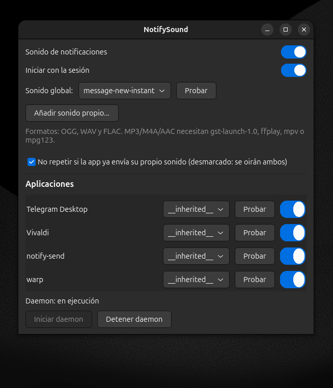
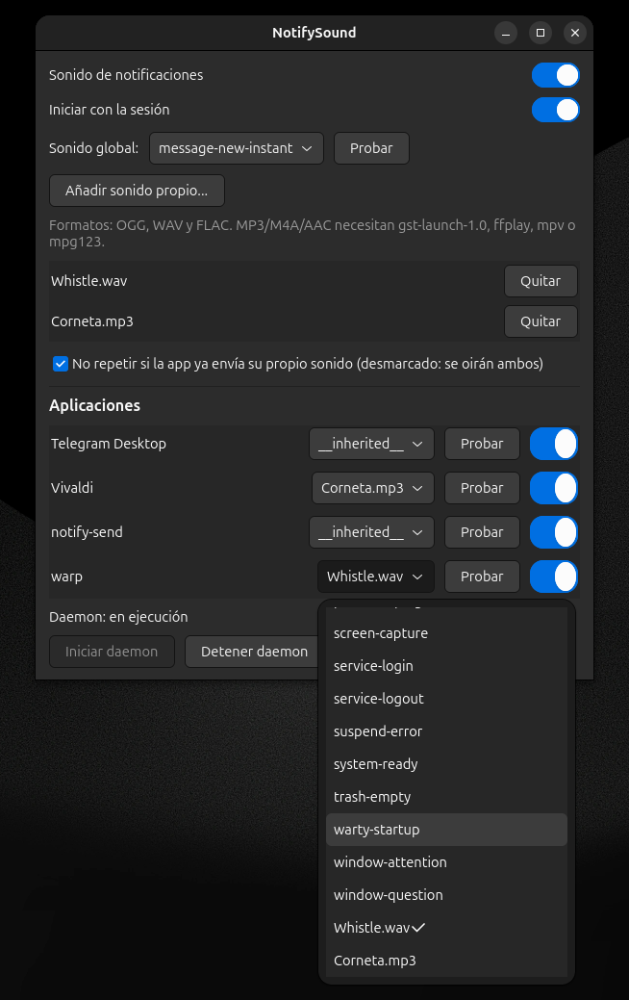

Sounds for the notifications that keep quiet.
On GNOME, a notification only makes a sound when the app that sent it explicitly includes a sound-name or sound-file hint. Most apps never do — Warp, terminals, IDE builds, cron-like tools — so their notifications stay completely silent.
Apps that do play their own sound (Telegram, WhatsApp PWAs, etc.) are left untouched — no double sounds, ever.
The daemon watches the notification bus and plays your chosen sound when an app sends a notification without one.
Notifications with their own sound (or that declare suppress-sound) are respected.
Enable/disable each app and give it its own sound. Apps are detected automatically.
Add your own OGG/WAV/FLAC (and MP3 with GStreamer/ffplay).
Choose sounds, test them, manage apps and daemon state from one window.
Installs per-user; autostart with your session is one click away.


Ubuntu / Debian dependencies:
sudo apt install python3-gi gir1.2-gtk-4.0 gnome-session-canberra dbusThen clone and install (no sudo needed):
git clone https://github.com/ChristianM023/notify-sound.git
cd notify-sound
./install.shUsage:
notify-sound # open the settings GUI
notify-sound --daemon # start the daemon
notify-sound --quit # stop the daemonOther distributions: see the README for requirements and alternatives.
NotifySound is free and open source, for everyone. If it makes your day a little better and you want to say thanks, any contribution is welcome — but nothing is mandatory.
Please double-check the network before sending: USDT on TRC-20 (Tron), BNB on BSC (BEP-20). The project is non-commercial; donations are used only to keep development going.